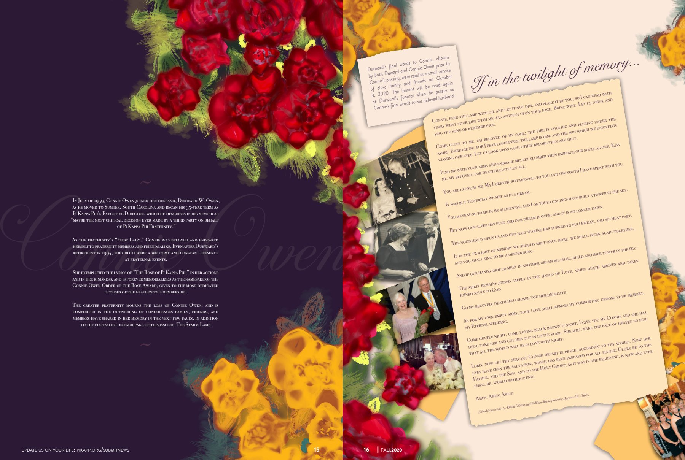
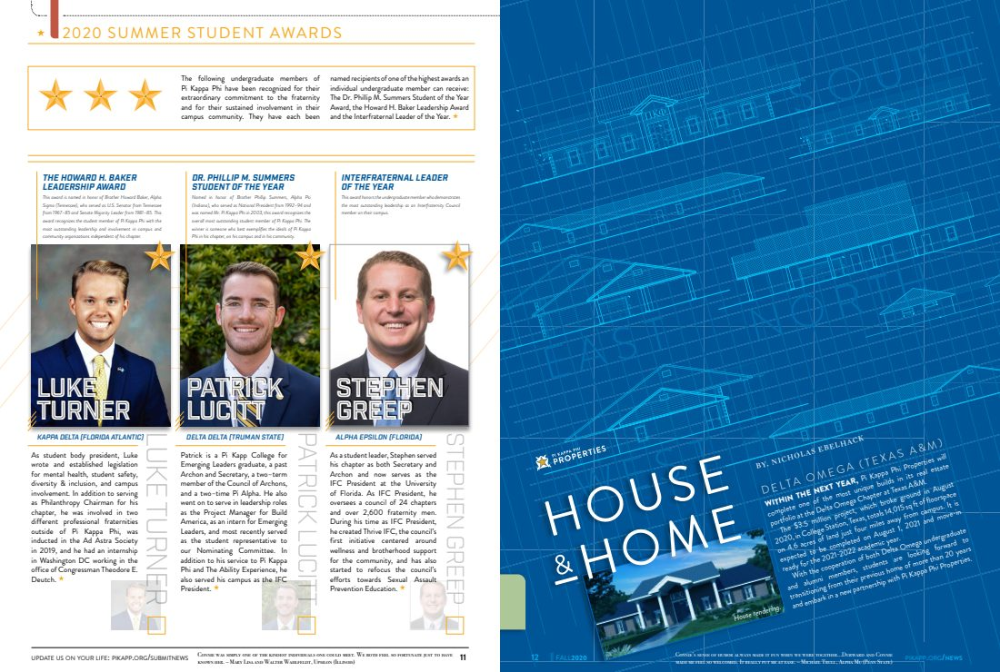
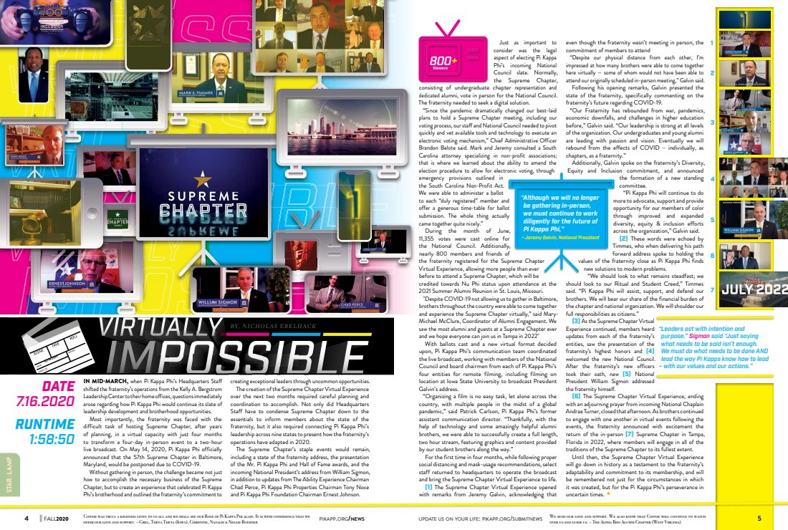
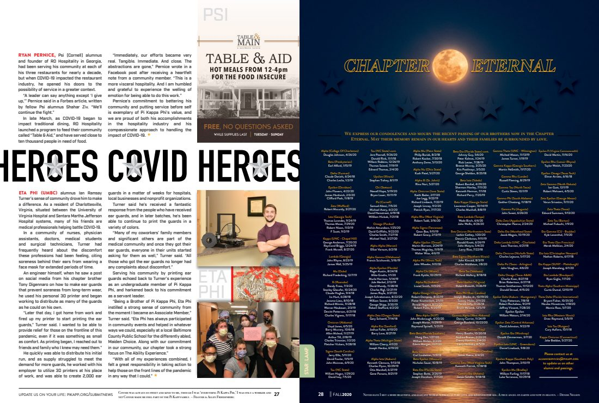

Art Direction & Layout Design
Star &
Lamp
Modernizing a century-old publication. I led the layout and art direction for the official Pi Kappa Phi magazine.
A century-old fraternity magazine, redrawn into an award-winning publication. Five years of issues, art direction, and editorial design.
01 / Redrawing a legacy
From brochure
to publication.
From rinse-and-repeat brochure to industry award winner.
Publication context
First published in the fall of 1909, the Star & Lamp is the magazine of Pi Kappa Phi Fraternity and is produced in-house. As the official publication of the organization, it serves as a forum of communication to educate, inspire, and move members to action on fraternity, Greek, and men's issues. From primary designer to creative director (while still designing), this magazine evolved into an industry award-winning publication.
"To Connie, the rose of Pi Kappa Phi." A tribute to the fraternity's First Lady, in my last issue as creative director.



02 / Editorial system
One publication,
many reading modes.
Feature openers, reporting, captions, and issue markers form a flexible editorial system.

"Test on 10th" balances photography, pull quotes, and dense reporting across the spread.
Artifact reading
One spread, several editorial jobs.
- Open
- An illustrated concept establishes the subject before dense reporting.
- Navigate
- Scale, columns, quotation, and photography separate reading modes.
- Connect
- Issue markers keep a story-specific treatment inside the larger magazine.
System relationship
From issue identity to archive
Summer 2017 favorites
Four highlight spreads from my first issue as creative director.


03 / Art direction in practice
Range inside
the system.
Editorial features, chapter coverage, and visual storytelling pulled from the issues I art-directed.

"A Common Bond": six brothers from across generations weigh in on the call to lead and the duty to serve.


Featured spreads
Representative work across reporting, information design, photography, illustration, and cover features.

"Thirty Under 30" celebrates thirty alumni redefining what it means to lead.


Documenting the men who ride, build, and serve through TAE, the philanthropic heart of Pi Kappa Phi.


Cover stories from the archive
One cover story from each of the remaining issues, with five years of features in chronological order.
04 / Five years of issues
The work stays
available in full.
Five years of issues, archived in full on Issuu. Click any cover to read the issue.
Verified recognition
Fraternity Communications Association Awards
2019 · 3rd Place Overall Magazine Excellence
2018 · 3rd Place Overall Magazine Excellence
Issues of the Star & Lamp
The complete nine-issue archive remains accessible.